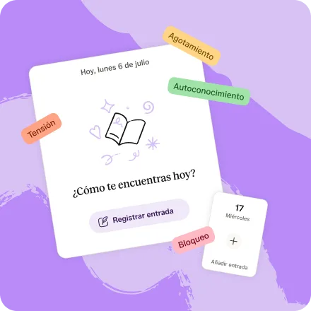
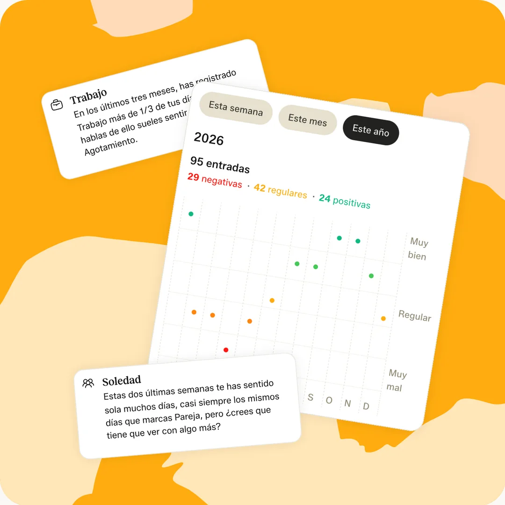
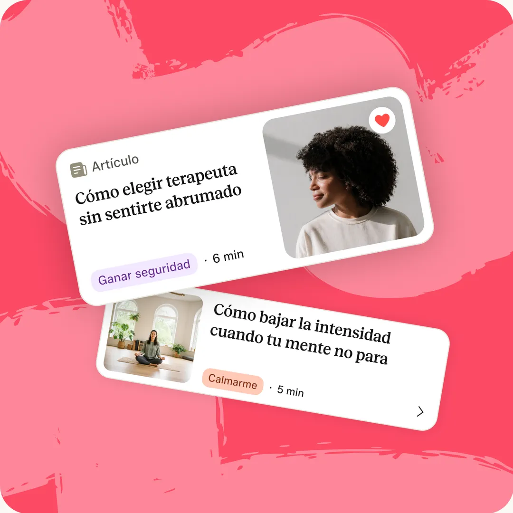
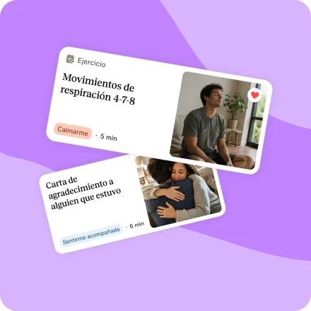
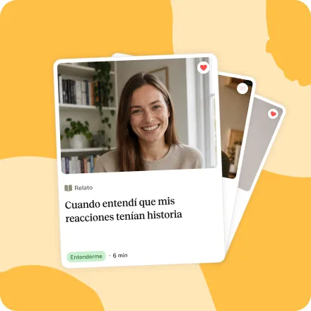
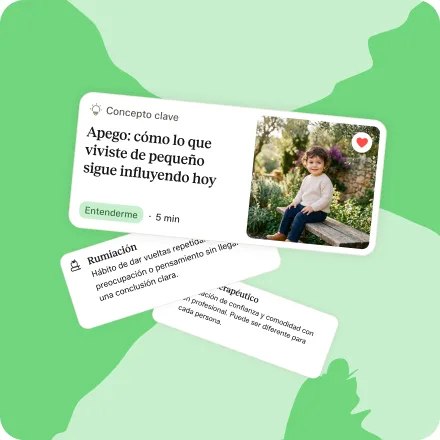
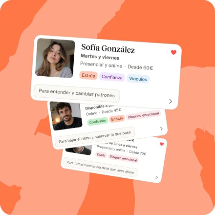
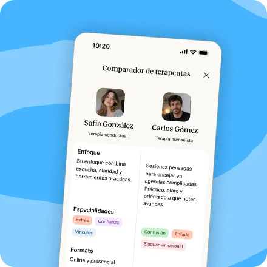
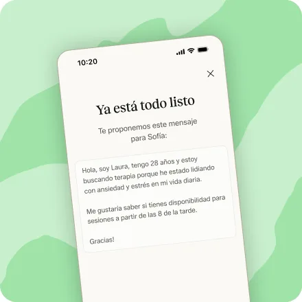

No hace falta tenerlo claro para empezar.
Explora contenidos, entiende tus opciones y encuentra el camino que mejor encaje contigo.
Deja por escrito cómo te sientes cada día


Lleva un registro para comprenderte
Anota cómo te sientes cada día. Sin juzgar lo que aparece. Con el tiempo, podrás entender mejor qué influye en cómo estás.
Tus patrones, más fáciles de ver
Observa cómo evoluciona tu estado de ánimo y descubre tendencias que pueden ayudarte a comprenderte mejor.
Tus emociones tienen sentido. Entiende lo que sientes.




Lecturas para entenderte
Artículos breves y accesibles que te ayudan a comprender lo que sientes y a ver tu situación con más claridad.
Herramientas para cuidarte
Ejercicios sencillos y prácticos que te ayudan a parar un momento, conectar contigo y afrontar el día con más calma.
Historias para reflejarte
Experiencias reales de otras personas que pueden ayudarte a sentirte acompañado y comprender mejor lo que vives.
Ideas para comprenderte
Conceptos clave sobre emociones y bienestar explicados de forma sencilla para ayudarte a entender mejor lo que sientes.
Conecta con el profesional adecuado, a tu ritmo



Encuentra a quien pueda acompañarte
Explora perfiles de profesionales y descubre distintas formas de trabajar antes de decidir qué encaja contigo.
Pon lado a lado lo que te importa
Compara perfiles según los criterios que sean importantes para ti y decide con más tranquilidad.
Contacta, incluso sin tenerlo claro
Haz un primer contacto cuando te sientas preparado. Sin prisas, sin compromiso y a tu ritmo.